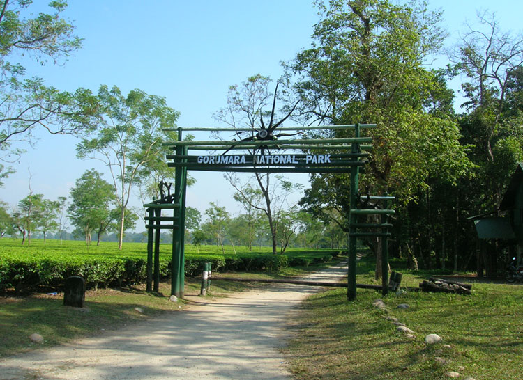

HOME | Kalimpong | Gorumara | Bishnupur | Purulia | Digha
Gorumara National Park is an important national park of North Bengal. It is situated just at the foothills of Eastern Himalaya in "Terai" region, on the flood plains in "Murti", "Raidak" rivers. "Jaldhaka" a Tributary of "Brahmaputra" flows just beside the National Park. Gorumara has mixed vegetation of forest & grassland. It is famous for its good population of One Horned Indian Rhino. Ministry of Environment and Forest has declared Gorumara as the best among the protected areas in India for the year 2009. Gorumara was declared a reserve forest in 1895. In 1949 it was given a status of a wild life sanctuary. Later on Gorumara was declared as National Park in 1994. Gorumara National Park is spread over an area of approx 80 Sq. km.
